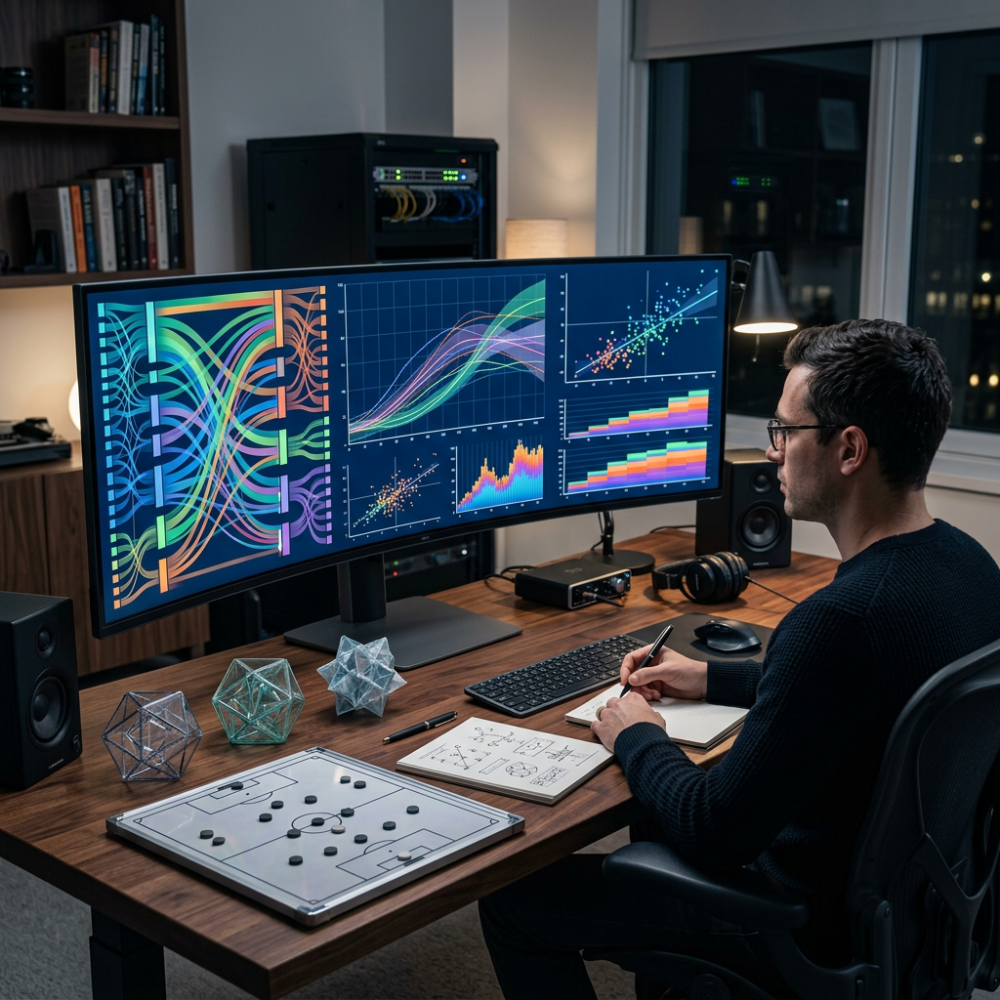

Introduzione: La Frustrazione dei Prelievi Lenti e la Soluzione Veloce
Ogni giocatore conosce l'emozione di una grande vincita, ma quella sensazione può trasformarsi rapidamente in frustrazione quando i tempi di attesa per ricevere il proprio denaro si prolungano per giorni o addirittura settimane. Se stai cercando un casino non aams con prelievo immediato, significa che hai già sperimentato questa situazione e vuoi evitarla in futuro. Gli operatori stranieri che operano al di fuori della regolamentazione AAMS offrono una soluzione concreta a questo problema, permettendo ai giocatori di accedere alle proprie vincite in tempo reale, spesso in pochi minuti dall'approvazione della richiesta.
La differenza principale tra i casinò tradizionali e quelli con prelievo immediato non risiede solo nella velocità di elaborazione, ma nell'intera filosofia operativa. Mentre le piattaforme regolamentate italiane devono seguire procedure burocratiche complesse che rallentano inevitabilmente i processi, i siti casino non aams utilizzano tecnologie avanzate e metodi di pagamento moderni che eliminano gli intermediari bancari tradizionali. Questa guida completa ti aiuterà a comprendere come funzionano questi sistemi, quali metodi di pagamento garantiscono la massima velocità e come ottimizzare il processo per ottenere le tue vincite nel minor tempo possibile.
È importante chiarire fin da subito che "immediato" non significa necessariamente "istantaneo al secondo", ma indica tempi di elaborazione che vanno da pochi minuti a massimo qualche ora. Questo rappresenta comunque un miglioramento enorme rispetto ai 3-7 giorni lavorativi tipici dei sistemi tradizionali. La chiave per ottenere questa velocità sta nella combinazione di tre fattori: scegliere il casinò giusto, utilizzare il metodo di pagamento appropriato e completare preventivamente le procedure di verifica dell'identità.
Cosa Sono i Casinò Non AAMS che Pagano Subito?
I casinò non AAMS sono operatori di gioco online che possiedono licenze internazionali rilasciate da autorità di regolamentazione estere come la Malta Gaming Authority (MGA), la Curacao eGaming o la UK Gambling Commission. Queste piattaforme non sono registrate nell'elenco dell'Agenzia delle Dogane e dei Monopoli italiana, ma operano legalmente secondo le normative dei paesi in cui sono licenziate. La caratteristica distintiva di molti di questi operatori è la capacità di processare i prelievi con una velocità sorprendente rispetto agli standard italiani.
La rapidità nei pagamenti deriva da diversi fattori strutturali. Primo, le licenze internazionali spesso impongono requisiti meno rigidi sulle procedure di controllo finanziario, pur mantenendo standard di sicurezza elevati. Secondo, questi casinò utilizzano infrastrutture tecnologiche moderne con sistemi automatizzati di approvazione che riducono drasticamente i tempi di elaborazione manuale. Terzo, molti di questi operatori collaborano direttamente con fornitori di servizi di pagamento specializzati in transazioni rapide, bypassando i circuiti bancari tradizionali che richiedono tempi di clearing prolungati.
Quando parliamo di "prelievo immediato", ci riferiamo specificamente al tempo che intercorre tra la richiesta del giocatore e l'effettiva disponibilità dei fondi sul suo conto. Questo processo si divide in due fasi: l'approvazione da parte del casinò (che può richiedere da 5 minuti a 2 ore nei migliori operatori) e il trasferimento effettivo dei fondi (che dipende dal metodo di pagamento scelto). Nei casinò non aams che pagano subito, entrambe queste fasi sono ottimizzate per garantire la massima velocità possibile.
È fondamentale comprendere che la licenza internazionale non è un dettaglio secondario ma una garanzia di affidabilità. Operatori con licenze riconosciute devono sottostare a controlli regolari, mantenere fondi dei giocatori separati da quelli operativi e garantire processi di pagamento trasparenti. La velocità nei prelievi diventa quindi non solo una questione di comodità, ma anche un indicatore della solidità finanziaria dell'operatore.
I Migliori Metodi di Pagamento nel Casino Non AAMS con Prelievo Immediato
La velocità di un prelievo dipende in larga misura dal metodo di pagamento selezionato. Anche il casino non aams con prelievo immediato più efficiente non può accelerare i tempi di elaborazione di un bonifico bancario tradizionale, che richiede naturalmente 2-5 giorni lavorativi per essere completato. La scelta del canale di pagamento è quindi cruciale quanto la scelta del casinò stesso. Per ottenere vincite in tempo reale, è necessario orientarsi verso soluzioni moderne che eliminano gli intermediari bancari tradizionali.
I metodi di pagamento si possono classificare in tre categorie principali in base alla velocità: ultra-rapidi (cripto e alcuni e-wallet), rapidi (e-wallet tradizionali e carte prepagate) e lenti (bonifici bancari e carte di credito tradizionali). La differenza non è solo quantitativa ma qualitativa: i metodi ultra-rapidi operano su reti dedicate che processano le transazioni 24/7 senza pause per giorni festivi o orari di chiusura bancaria.
Un aspetto spesso trascurato riguarda la necessità di utilizzare per il prelievo lo stesso metodo impiegato per il deposito, o almeno un metodo intestato allo stesso titolare. Questa regola, imposta dalle normative antiriciclaggio internazionali, può influenzare la velocità: se depositi con carta di credito ma desideri prelevare con Bitcoin, potresti dover prima prelevare sulla carta l'importo depositato e solo successivamente utilizzare metodi alternativi per il resto delle vincite.
Criptovalute e Portafogli Elettronici: La Chiave per la Velocità
Le criptovalute rappresentano attualmente il metodo più veloce in assoluto per ricevere vincite da un casinò online. Bitcoin, Ethereum, Litecoin, USDT (Tether) e altre valute digitali operano su reti blockchain che processano le transazioni indipendentemente da orari bancari, giorni festivi o fusi orari. Una volta che il casinò approva il prelievo, la transazione viene trasmessa alla rete e confermata generalmente entro 10-30 minuti, dopo di che i fondi sono immediatamente disponibili nel wallet digitale del giocatore.
Il vantaggio principale delle crypto non è solo la velocità ma anche l'assenza di intermediari. Non ci sono banche che devono autorizzare la transazione, non ci sono sistemi di clearing che devono processare i pagamenti, non ci sono controlli antiriciclaggio automatici che bloccano temporaneamente i fondi. La blockchain verifica autonomamente la validità della transazione attraverso il consenso distribuito della rete, rendendo il processo non solo veloce ma anche trasparente e tracciabile.
I portafogli elettronici come Skrill, Neteller, Jeton, MiFinity e ecoPayz costituiscono la seconda opzione migliore per rapidità. Questi servizi mantengono fondi in conti digitali separati dal sistema bancario tradizionale, permettendo trasferimenti quasi istantanei tra utenti della stessa piattaforma. Quando un casinò approva un prelievo verso Skrill, ad esempio, i fondi possono essere accreditati in 15-60 minuti, dopodiché sono immediatamente utilizzabili per acquisti online o trasferibili verso un conto bancario tradizionale (quest'ultimo passaggio richiederà tempi bancari normali).
Questi metodi rappresentano la vera essenza dei siti con prelievo immediato: senza di loro, la promessa di rapidità rimarrebbe puramente teorica. È importante notare che molti casinò offrono limiti di prelievo più alti per transazioni in criptovaluta, proprio perché questi metodi comportano costi di elaborazione inferiori per l'operatore. Un giocatore che punta alla velocità dovrebbe quindi considerare di aprire un wallet digitale o un account su un exchange di criptovalute prima ancora di registrarsi al casinò.
Come Accelerare i Tempi di Prelievo: Il Processo KYC
La verifica dell'identità, conosciuta come processo KYC (Know Your Customer), rappresenta uno dei fattori più influenti sulla velocità effettiva del primo prelievo. Tutti i casinò legali, compresi quelli non AAMS, sono obbligati dalle normative internazionali antiriciclaggio a verificare l'identità dei propri giocatori prima di processare prelievi significativi. Questa procedura richiede l'invio di documenti come carta d'identità, prova di residenza e talvolta una foto del metodo di pagamento utilizzato.
Il segreto per ottenere prelievi veramente immediati sta nel completare il KYC proattivamente, immediatamente dopo la registrazione e prima ancora di effettuare il primo deposito o, al massimo, subito dopo. La maggior parte dei giocatori commette l'errore di attendere la prima vincita prima di pensare alla verifica, trovandosi poi in una situazione di attesa forzata proprio nel momento in cui desiderano accedere ai propri fondi. I casino senza aams più efficienti offrono team di verifica disponibili 24/7 che possono approvare i documenti in poche ore, ma solo se questi vengono forniti in anticipo.

La procedura tipica richiede: un documento d'identità valido (carta d'identità, patente o passaporto) fotografato fronte e retro con buona illuminazione; una prova di residenza recente (bolletta, estratto conto bancario o documento ufficiale) datata non oltre 3 mesi; eventualmente una foto della carta di credito/debito utilizzata per il deposito (coprendo i numeri centrali per sicurezza). Questi documenti vanno generalmente caricati attraverso un'area dedicata del profilo utente o inviati via email al supporto clienti.
Un consiglio pratico: prepara versioni digitali di alta qualità di questi documenti salvandoli sul tuo smartphone o computer prima della registrazione. Quando crei il tuo account, carica immediatamente tutto il necessario. Questo approccio proattivo può ridurre i tempi del primo prelievo da 24-72 ore a pochi minuti, trasformando la tua esperienza da frustrante a eccellente. I casino che pagano subito apprezzano i giocatori organizzati e spesso velocizzano ulteriormente le pratiche per chi dimostra trasparenza fin dall'inizio.
Vantaggi e Svantaggi dei Siti con Prelievo Immediato
Come ogni soluzione nel mondo del gioco online, anche i casinò con prelievi immediati presentano aspetti positivi e potenziali criticità che è importante conoscere prima di effettuare una scelta informata. La velocità nei pagamenti non è l'unico criterio da valutare, ma certamente rappresenta un vantaggio competitivo significativo per molti giocatori.
Vantaggi principali:
- Gestione ottimale del bankroll: Avere accesso immediato alle vincite permette una pianificazione finanziaria più efficace, consentendo di utilizzare i fondi per altre necessità senza dover attendere giorni
- Riduzione dello stress: Eliminare l'ansia dell'attesa riduce significativamente la tensione psicologica associata ai prelievi, migliorando l'esperienza di gioco complessiva
- Flessibilità finanziaria: La possibilità di accedere rapidamente ai fondi offre maggiore libertà nelle decisioni finanziarie personali
- Indicatore di affidabilità: Un casinò che paga velocemente dimostra solidità finanziaria e trasparenza operativa, caratteristiche fondamentali per la fiducia del giocatore
- Tecnologia avanzata: I siti che offrono prelievi rapidi generalmente investono in infrastrutture moderne anche per altri aspetti della piattaforma
Svantaggi o considerazioni da valutare:
- Limiti per transazione potenzialmente più bassi: Alcuni casinò che offrono velocità estrema impongono limiti di prelievo giornalieri o per transazione più restrittivi rispetto ai siti tradizionali
- Possibili commissioni su metodi veloci: Criptovalute ed e-wallet possono comportare costi di transazione (sia dal casinò che dal provider del servizio) più elevati rispetto ai bonifici tradizionali
- Rischio di gioco impulsivo: L'accesso troppo rapido ai fondi può tentare alcuni giocatori a ridepositare immediatamente le vincite, compromettendo una gestione responsabile del gioco
- Necessità di familiarità tecnologica: Utilizzare criptovalute o e-wallet richiede un minimo di conoscenza tecnologica che potrebbe risultare ostica per alcuni utenti
- Minore diffusione geografica: Non tutti i metodi di pagamento ultra-rapidi sono disponibili in ogni paese o accettati da tutti gli operatori
La valutazione tra vantaggi e svantaggi dipende fortemente dalle priorità individuali. Un giocatore occasionale che effettua prelievi saltuari potrebbe non trovare cruciale la differenza tra 30 minuti e 3 giorni, mentre un giocatore più attivo che gestisce il casinò come parte della propria strategia di intrattenimento regolare apprezzerà enormemente la velocità. L'importante è fare una scelta consapevole, valutando anche altri fattori come la qualità dell'offerta di giochi, i bonus disponibili e la reputazione complessiva dell'operatore.
Sicurezza e Affidabilità nel Casino Non AAMS con Prelievo Immediato
Una domanda legittima che molti giocatori si pongono è: "Se pagano così velocemente, è davvero sicuro?" È comprensibile associare la rapidità a potenziali rischi, ma in realtà la velocità nei prelievi è spesso un indicatore positivo di solidità finanziaria e trasparenza operativa. Un casino non aams con prelievo immediato che paga regolarmente e velocemente dimostra di avere liquidità sufficiente e sistemi organizzativi efficienti, caratteristiche che raramente si trovano in operatori poco affidabili.
I casinò truffa adottano generalmente la strategia opposta: ritardano i pagamenti con scuse varie, impongono requisiti di verifica sempre nuovi, o semplicemente ignorano le richieste dei giocatori. Un operatore che processa prelievi in pochi minuti non ha interesse a trattenere fondi dei giocatori, perché la sua reputazione e il passaparola positivo costituiscono asset molto più preziosi nel lungo termine. La velocità diventa quindi un vantaggio competitivo e un elemento di marketing fondamentale.
Ciò detto, la velocità non deve essere l'unico criterio di valutazione della sicurezza. È essenziale verificare altri indicatori di affidabilità: la presenza di una licenza valida e verificabile (i dettagli dovrebbero essere visibili nel footer del sito), l'utilizzo di crittografia SSL a 128 o 256 bit (identificabile dal lucchetto nella barra degli indirizzi del browser), la presenza di fornitori di giochi certificati e riconosciuti, recensioni positive da parte di giocatori reali su forum e siti specializzati. Se cerchi ulteriori informazioni sui casino non aams con prelievo immediato, puoi consultare piattaforme di confronto indipendenti.
Un elemento spesso trascurato riguarda la protezione dei dati personali. I migliori casinò con prelievi rapidi non solo pagano velocemente ma gestiscono i dati sensibili con sistemi conformi al GDPR europeo, anche quando operano con licenze extra-UE. Questo significa crittografia end-to-end per tutte le comunicazioni, server sicuri per lo storage dei documenti di identità, e politiche chiare sulla conservazione e cancellazione dei dati su richiesta dell'utente.
Infine, la presenza di strumenti per il gioco responsabile costituisce un ulteriore indicatore di serietà: limiti di deposito personalizzabili, opzioni di autoesclusione temporanea o permanente, link a organizzazioni di supporto per problemi di gioco, e test di autovalutazione. Un casinò che si preoccupa del benessere dei propri utenti oltre che dei profitti è generalmente un casinò che merita fiducia, indipendentemente dalla velocità dei prelievi.
Tabella Comparativa: AAMS vs Non-AAMS con Prelievo Immediato
| Caratteristica | Casino AAMS Tradizionali | Casino Non-AAMS Prelievo Immediato |
|---|---|---|
| Tempo medio prelievo | 3-7 giorni lavorativi | 5 minuti - 24 ore |
| Metodi di pagamento veloci | Limitati (principalmente carte) | Ampia scelta (crypto, e-wallet, carte) |
| Verifica documenti | Obbligatoria prima del primo deposito | Richiesta al primo prelievo (consigliata prima) |
| Limiti di prelievo | Generalmente elevati | Variabili, talvolta più bassi per singola transazione |
| Commissioni | Spesso assenti o molto basse | Dipendono dal metodo (crypto possono avere fee di rete) |
| Licenza e regolamentazione | ADM (Agenzia Dogane e Monopoli) | Curacao, MGA, UKGC, altre licenze internazionali |
| Orari di elaborazione | Solo giorni lavorativi, orari ufficio | 24/7 inclusi festivi |
| Varietà di giochi | Limitata dalle restrizioni italiane | Catalogo più ampio senza restrizioni locali |
| Bonus e promozioni | Limitati da normativa AAMS | Generalmente più generosi |
Conclusione: La Scelta Consapevole per Vincite Immediate
Ottenere le proprie vincite in tempo reale non è più un'utopia ma una realtà concreta per chi sceglie con attenzione la piattaforma di gioco e il metodo di pagamento appropriato. I casino che pagano subito rappresentano una categoria in forte crescita nel panorama del gioco online internazionale, offrendo ai giocatori italiani un'alternativa valida e spesso più conveniente rispetto alle opzioni tradizionali regolamentate.
La chiave per un'esperienza ottimale sta nella combinazione di tre elementi fondamentali: selezionare un operatore affidabile con licenza internazionale riconosciuta e reputazione positiva; utilizzare metodi di pagamento moderni come criptovalute o e-wallet che eliminano i ritardi dei circuiti bancari tradizionali; completare proattivamente il processo di verifica dell'identità prima ancora di richiedere il primo prelievo. Seguendo questi principi, è realisticamente possibile accedere alle proprie vincite in meno di un'ora dall'approvazione della richiesta.
È fondamentale, tuttavia, mantenere un approccio equilibrato e responsabile al gioco online. La velocità nei prelievi deve rappresentare un vantaggio pratico per una migliore gestione finanziaria, non un incentivo al gioco impulsivo o compulsivo. Utilizzare strumenti di autocontrollo come limiti di deposito, pause obbligatorie e autoesclusione quando necessario rimane essenziale indipendentemente dalla rapidità con cui un casinò processa i pagamenti.
Il mercato del gioco online continua a evolversi rapidamente, con tecnologie sempre più avanzate che promettono ulteriori miglioramenti nei tempi di elaborazione e nella sicurezza delle transazioni. I giocatori attenti e informati sono quelli che sapranno sfruttare al meglio queste opportunità, bilanciando intrattenimento, convenienza e responsabilità in un'esperienza di gioco complessivamente positiva e sostenibile nel tempo.